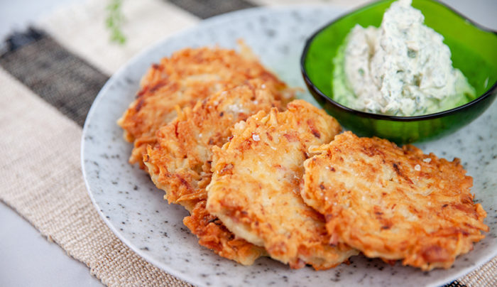

German Potato Pancakes

Description
The hash brown's European cousin. These potato pancakes are delicious both as a breakfast or dinner meal.
Breakfast for dinner, anyone?
Ingredients:
- 2 large eggs
- 2 tbsp. all-purpose flour
- 1/4 tsp. baking powder
- 1/2 tsp. salt
- 1/4 tsp. pepper
- 6 medium-sized potatoes, peeled and shredded
- 1/2 cup finely chopped onion
- 1/4 cup vegetable oil
Steps:
- Beat eggs, flour, baking powder, salt, and pepper together in a large bowl. Stir in potatoes and onion.
- Heat oil in large skillet over medium heat.
- Drop large tablespoonfools of potato mixture into hot oil in batches. Press to flatten and cook for about 3 minutes on each side, or until browned.
- Transport to paper towel-lined plate to drain. Repeat with remaining potato mixture.